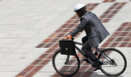
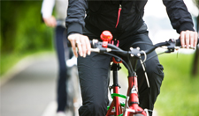
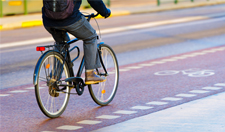

Benefits


By riding your bicycle to work you are helping yourself and the environment as well!
Bicycling is healthy
- “Adults who bike to work have better weight, blood pressure, and insulin levels.” (Gordon-Larsen, P., et al., 2009)
- “Women who bike 30 minutes a day have a lower risk of breast cancer.” (Luoto, R., et al., 2000)
- “Adolescents who bicycle are 48% less likely to be overweight as adults.” (Menschik, D, et al., 2008)
- “Traffic congestion wastes nearly 3.9 billion gallons of gas per year in the U.S..” (Texas Transportation Institute, 2010)
- “For every 1 mile pedaled rather than driven, nearly 1 pound of CO² (0.88 lbs) is saved..” (US Environmental Protection Agency, 2009)
